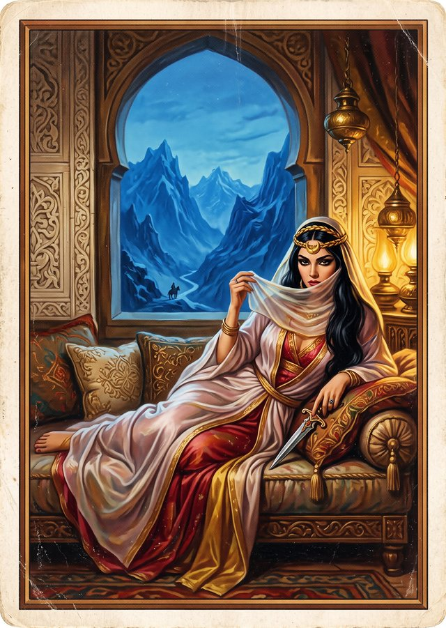
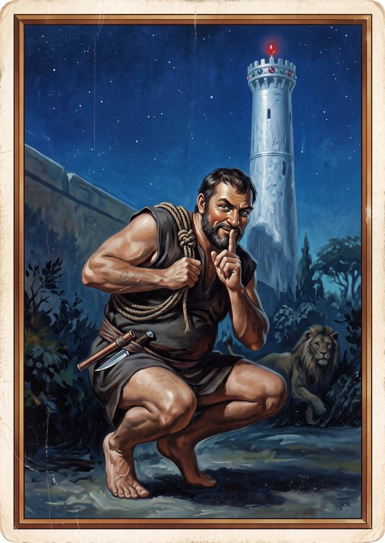
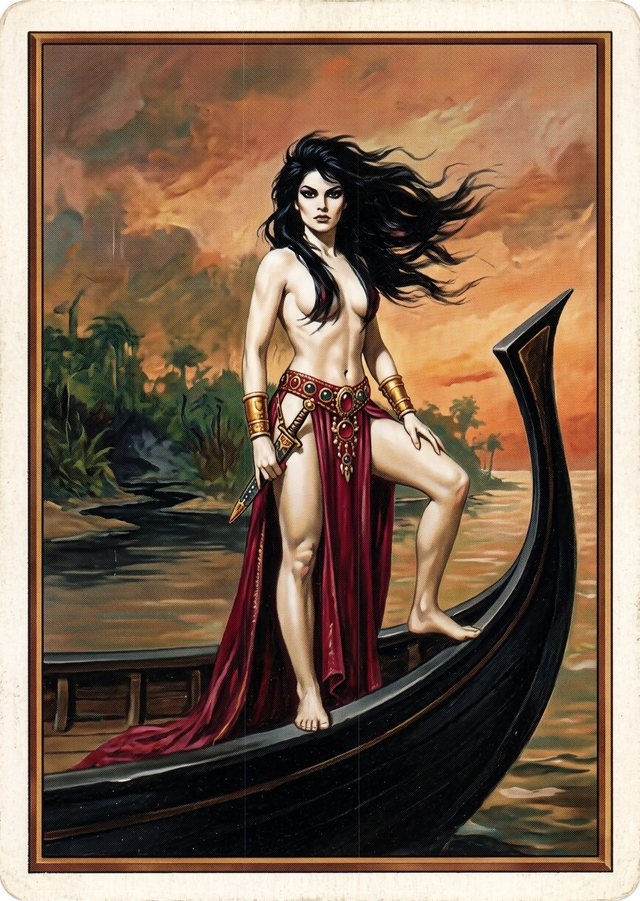
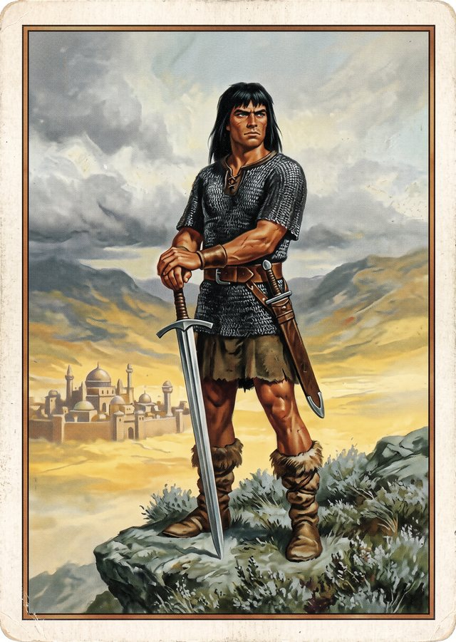

The Abyss
Which Hyborian hero are you?
Know, oh prince, who you might have been in the age undreamed of… A barbarian, a thief, a sorcerer, or a pirate queen?




The Abyss
Know, oh prince, who you might have been in the age undreamed of… A barbarian, a thief, a sorcerer, or a pirate queen?



